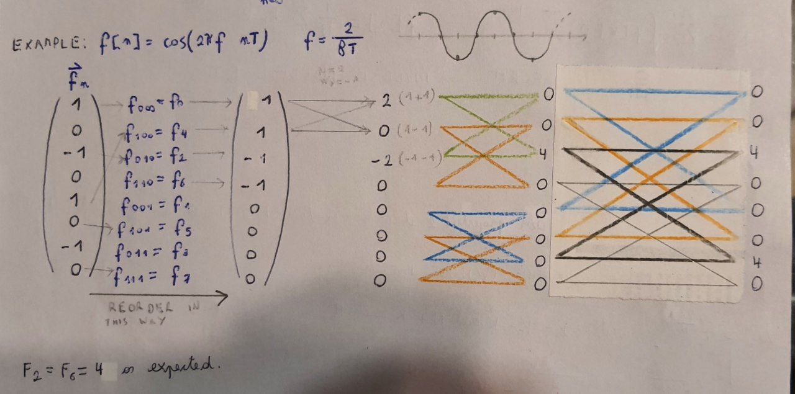

Lecture 10 - 08 November 2021¶
Brief Recap of last lecture¶
Assumption
Assume \(f(t)\) periodic with period \(NT,\ N\in\mathcal{N}^{+}_{even \neq 0}\) and \(\frac{\pi}{T}\) band limited.
The following expressions hold:
Fourier Series¶
Coefficients¶
Discrete Fourier Transform¶
Inverse Discrete Fourier Transform¶
Twiddle Factor¶
With these expressions in mind it is possible to start developing the “Radix 2 decimation in time Fast Fourier Transfrom (FFT)”.
Fast Fourier Transform¶
Moular property of the Twiddle Factor¶
where the fact that \(k-k \text{ mod }N\) is always an integer multiple of N (by definition).
Assumption
Assume that \(N\) is a power of two, that is \(N=2^{\mu}\); \(\mu = log_2(N)\)
and separate the even and odd terms of the DFT:
This relation is, indeed, a recurrence relation. Let’s focus on it!
where the fact that \(W_{N}^{N/2}=e^{i \frac{2\pi}{N}\frac{N}{2}}=e^{i\pi}= -1\) was used. The final expression is:
Example¶
The formula can be easily recalled by using the “butterfly diagram” and assuming the \(F\)s to be vectors \(F_k=\sum_{n=0}^{N-1}f_n W^{nk}_N\):

As a final remark, if the number of point N is not a power of two the simplest way to perform the FFT is to pad he sequqnce with zeros or use windowing.